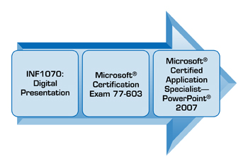

Orientation
© walex101/shutterstock
Introduction
Welcome to INF1070: Digital Presentation!
INF1070: Digital Presentation is an introductory-level presentation software course that will teach you how to create and format a presentation; add graphics, charts, and tables; and collaborate to deliver a professional presentation. You will discover how to establish proper routines and practices that promote safety and security, and you will practise basic competencies or employability skills as you work through the course. You will also examine your personal inventory (or interests and values) and make connections to possible career pathways.
This course is designed using Microsoft PowerPoint® 2007 on a PC and will provide instructions for this software application. If you are using previous versions of PowerPoint, use the Help menu and the keyword search feature for software instruction and discuss with your teacher how to modify the exercises as necessary. You can also search the Internet for help. Microsoft Office Online is a rich source of training that provides demonstrations, podcasts, and webcasts that teach you how to use the software features. Remember, your teacher is also there to guide you in the right direction.
Included in this course are five training rooms. They provide instruction and allow you to practise the skills needed to successfully complete the course. You are also required to complete a Time to Practice exercise after each of the five training rooms. These practice exercises are an opportunity for you to practise and demonstrate the skills learned in the training room.
At the end of this course you will be ready to complete your final project, which will assess your skills in preparing a digital presentation. Once you successfully complete the final project and your skills assessments, you will earn one credit towards your high school diploma. A professional portfolio of your work is a valuable tool that can be used for job interviews to demonstrate your presentation skills. Discuss creating a portfolio with your teacher. For now, save everything in a folder on your computer.

© digitalife/shutterstock
Real-world Connections
To be successful in the work world, you need to have hard and soft skills. Hard skills are technical skills related to your job that make you productive and efficient—like knowing how to create a proper letter. Soft skills are the basic competencies you will practise throughout this module. Soft skills are what make you a good employee: having a positive attitude and being a creative problem solver, a good team member, and a skilled communicator. Whether you are interested in a career in business, technology, health sciences, or trades, all industries are increasingly in need of employees with strong computer skills.
Industry Skills
INF1070: Digital Presentation builds your skills towards obtaining Microsoft Office Certification.
You are encouraged to visit the Microsoft website to investigate certification possibilities.


© tastemeru/shutterstock
Course Folder
While working through this course it is important to save all your work as evidence of your learning. Check with your teacher for information regarding where to create your course folder in which to save your assignments.
Watch the demonstration “File Management – Creating a New Folder” to see how to create a folder on your desktop. This instructional video, like all others, can also be accessed at any time from the Toolkit.
Icon Legend
This icon alerts you to project work that will be submitted for assessment.
This icon signifies that a scoring rubric is accessible to you to see how you may be scored on a particular assessment piece.
This icon signifies that you are linking to an external document.
This icon alerts you to a guided search you will need to perform.
This icon shows you that an important tip or hint has been provided.
Toolkit
Have a question? Need some help? Check out the toolkit!
The INF1070 toolkit is an excellent place to look when you need to view demonstrations of basic software commands and features of PowerPoint 2007, and to learn some tips and tricks. A link to the toolkit is available in the menu on the left, so you don't have to navigate back through the course to find the information you need.
Project Descriptions
To become skilled in all of the outcomes for INF1070: Digital Presentation, there are four projects to complete. These projects are
Project 1: Workstation Routines and Management
Learn about health, safety, and security when working on a computer and apply appropriate positions and routines consistently.
Project 2: Basic Competencies
Demonstrate workplace employability skills.
Project 3: Digital Presentation Skills
Work through five training rooms to develop skills using presentation software to create, customize, and deliver a digital presentation that covers a career connection component.
Project 4: Final Project
Create, manage, deliver, and publish a self-running digital presentation on a topic of your choice.

© PhotoStocker/shutterstock
Project Skill Level
Expert/Master
|
Proficient
|
Competent
|
Limited
|
No Evidence |

© maxstockphoto/shutterstock
Environmental Impact
STOP before you print!
Can you think of ways to reduce computer waste?
- paper reduction and recycling
- toner cartridge recycling
- computer equipment recycling
Save power by turning off your hardware when you are finished for the day.